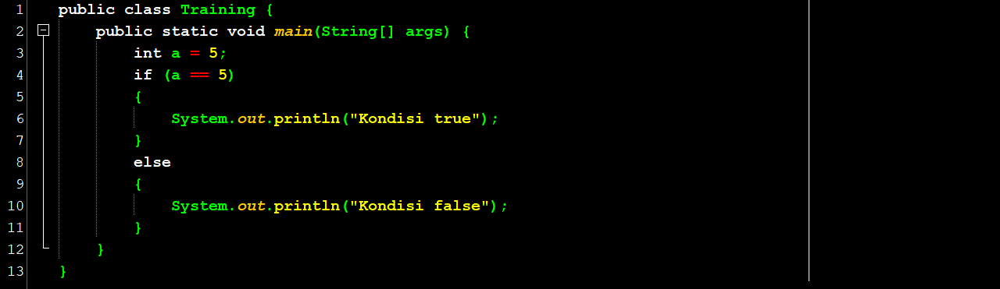
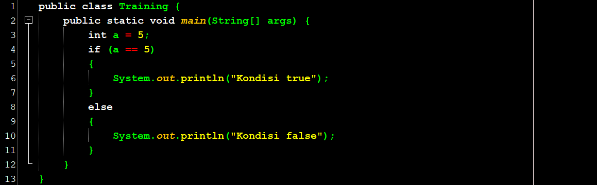
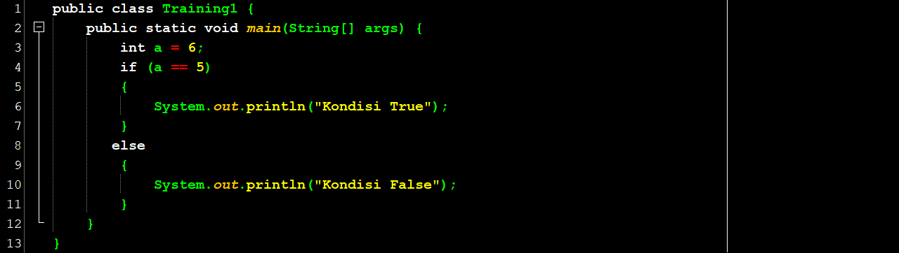
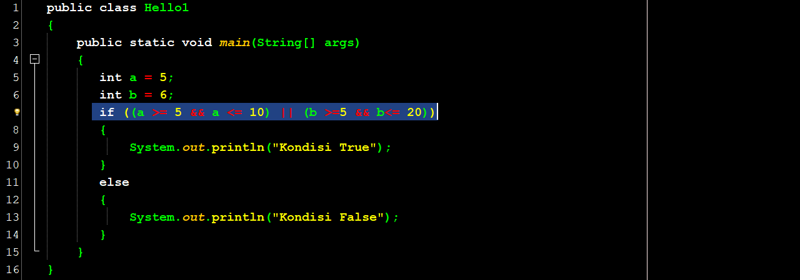
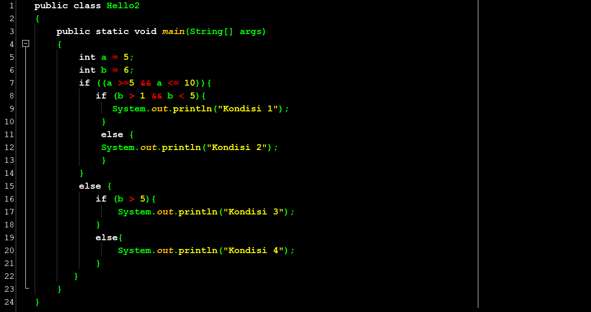

Halo teman-teman
Pada pembahasan sebelumnya, kita sudah membahas mengenai variable dan penggunaannya di dalam bahasa pemograman (koding). Nah, seperti kita ketahui dari contoh-contoh program sebelumnya, instruksi-instruksi dalam bahasa pemrograman dieksekusi secara terurut dari atas ke bawah. Akan tetapi, ada kalanya kita ingin membuat program yang harus dieksekusi berdasarkan kondisi yang sudah kita tentukan sebelumnya.
Misalkan kita ingin menambah variable dengan nilai 5, jika variable tersebut lebih besar dari 100, dan kita akan menambah variable tersebut dengan nilai 10 jika nilai variable tesebut TIDAK lebih besar dari 100. Untuk bisa membuat program seperti itu, kita membutuhkan suatu fitur yang disebut percabangan dan yang lebih dikenal dengan istilah if-then-else. Struktur dari if-then-else adalah:
if kondisi then {block-then} else {block-else}
Statement di dalam block-then akan dieksekusi jika kondisi bernilai true, sedangkan statement di dalam block-else akan dieksekusi saat kondisi bernilai false.
Lihat contoh if-then-else di program Java berikut ini:
Pada baris ke 4, karena a bernilai 5, maka kondisi a == 5 akan menghasilkan nilai true dan yang akan dieksekusi adalah statement di antara kurung kurawal di baris ke 5 dan baris ke 7 (block-then). Jika kita mengganti nilai a dengan angka 6 seperti contoh berikut ini:
maka yang akan dieksekusi adalah statement di antara kurung kurawal di baris ke 9 dan baris ke 11 (block-else), karena kondisi di baris ke-4 menghasilkan nilai false.
Kondisi tersebut bisa saja cukup kompleks dan merupakan gabungan dari beberapa pernyataan yang dirangkai dengan menggunakan AND atau OR seperti contoh berikut ini:
Kita bisa menggunakan statement if-then-else di dalam suatu block seperti contoh berikut ini:
Kita lihat bahwa di code ini, kita menuliskan statement if di dalam if baik itu di block then maupun block else. Code di atas akan melakukan pengecekan kondisi di baris ke-7, bisa true, akan dilakukan pengecekan kondisi di baris ke-8 di mana jika true akan mengeksekusi statement di baris ke-9 dan jika salah akan mengeksekusi statement di baris ke-12. Sementara itu, jika pengecekan kondisi di baris ke-7 menghasilkan false, maka akan dilakukan pengecekan kondisi di baris ke-16. Jika hasilnya true, maka akan mengeksekusi baris ke-17 dan jika false maka akan mengeksekusi baris ke-20.
Selain menuliskan statement if di dalam block if, kita juga bisa merangkai suatu if-then-else secara langsung untuk melakukan pengecekan lain jika kondisi salah dengan code berikut:
Di code ini, jika a lebih besar sama dengan 0 (bilangan positif), maka baris ke-8 akan dieksekusi. Akan tetapi jika a adalah bilangan negatif, maka akan dilakukan pengecekan terhadap bilangan b di baris ke-10. Jika b adalah bilangan positif, maka akan dieksekusi baris ke-11 dan jika salah, maka akan dieksekusi baris ke-14.